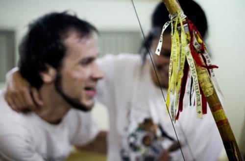
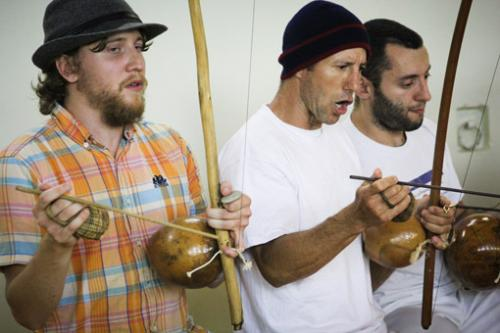

Mestre Pinoquio в Москве. Фоторадости.
Растягиваем послевкусие от приезда Mestre Pinoquio в столицу. После роскошного отчета Camaleao мне остается только выложить фотографии и полностью присоединиться ко всему вышесказанному. От себя благодарю Тему, который через свое сердце и свои слова передал когда-то восхищение этим мастером, вдохновил меня поехать на это мероприятие и отлично ассистировал на интервью. Не планировала участвовать в семинаре и вообще играть (и вообще ну эту, вашу капоэйру, приходите на йогу), но когда местре волевым кивком головы показал: «Выходи играй», не без удовольствия присоединилась к „девушкам на танцполе“)))
Mestre Pinoquio — простой такой, в оранжевых шортах и шапке (
Отдельное удовольствие — наблюдать за старыми прекрасными знакомыми Caveira, Camaleao и Te-man. Вот первые два все время ехидничают в ответ на «ми-ми-ми» других людей от разных мастеров и эвентов, а тут сами не могли оторвать влюбленных взглядов от своей звезды. И это прекрасно: дело ведь не в том, чтобы творить кумиров, а в том, чтобы находить своих звезд и свои маяки и свои поводы для вдохновения и движения.
Давайте запомним это время, друзья. Мне кажется, это счастливые дни.
На фото нет фееричной капоэйры, но есть радость встреч, улыбки и окончательная развиртуализация всех присутствовавших инсайдеров.
Enjoy!

